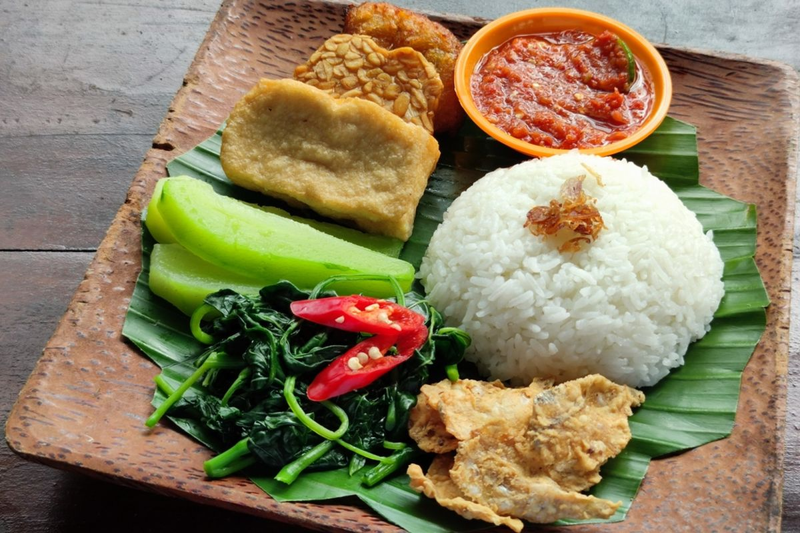

Rendang
Home

Ingredients
Tempong Chili Sauce
- 1 clove of garlic
- 5 red chilies
- 1 tomato
- Fried shrimp paste
Fresh Vegetables
- Boiled green vegetables
- Boiled bean sprouts
- Sliced cucumber
Steps
-
Fry garlic, chilies, and tomatoes until cooked, then grind them with
fried shrimp paste.
- Add salt and sugar to taste. Blend and serve with sambal tempong.
-
Place the rice, sambal tempong, fresh vegetables, tempeh, tofu, and
salted fish on a banana leaf. Serve with sweet or plain iced tea to
complete the meal.